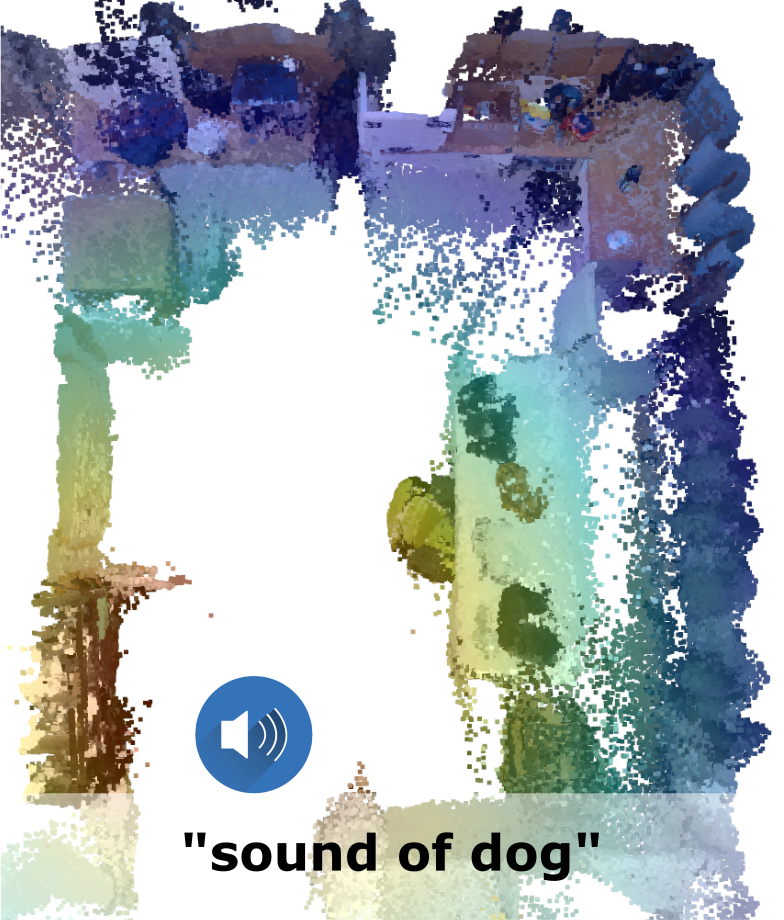

While interacting in the world is a multi-sensory experi- ence, many robots still rely only on visual perception to map and nav- igate in their environments. In this work, we propose Audio-Visual- Language Maps (AVLMaps), a unified 3D spatial map representation for storing cross-modal information from audio, visual, and language cues. AVLMaps integrate the open-vocabulary capabilities of multi- modal foundation models pre-trained on Internet-scale data by fusing their features into a centralized 3D voxel grid. In the context of nav- igation, we show that AVLMaps enable robot systems to index goals in the map based on multimodal queries, e.g., textual descriptions, images, or audio snippets of landmarks. In particular, the addition of audio information enables robots to more reliably disambiguate goal locations. Extensive experiments in simulation show that AVLMaps enable zero-shot multimodal goal navigation from natural language instructions and provide 50% better recall in ambiguous scenarios. These capabilities extend to mobile robots in the real world – navigat- ing to landmarks where specific sounds were heard in unstructured environments.

The key idea behind building an AVLMap is to integrate visual and audio information into the 3D reconstruction of an environment. This can be done by computing visual localization features (e.g. NetVLAD, SuperPoint), visual-language features (e.g. LSeg), and audio-language features (e.g. AudioCLIP) and associate these features with the 3D reconstruction. Finally, we can predict 3D heatmaps indicating the location of multimodal concepts such as objects, sounds, and images.

When the language is ambiguous, the robot can use the multimodal information to narrow down the goal location. For example, if the robot is asked to go to the "chair near the sound of baby crying", it can use the audio information integrated in the map to disambiguate the goal. The intuition behind this is that we convert the predictions from different modalities into 3D heatmaps, and compute the pixel-wise joint probability of the heatmaps. This allows us to compute the probability of a goal location given the multimodal query.
We generate the navigation policies in the form of executable code with the help of Large Language Models. By providing a few examples in the prompt, we exploit GPT-3 to parse language instructions into a string of executable code, expressing functions or logic structures (if/else statements, for/while loops) and parameterizing API calls (e.g., robot.load_image(img_path), robot.move_to(position), robot.get_major_map(sound=sound_name), robot.get_major_map(img=image), robot.get_major_map(obj=obj_name) etc.).
Major

Auxiliary
Fuse